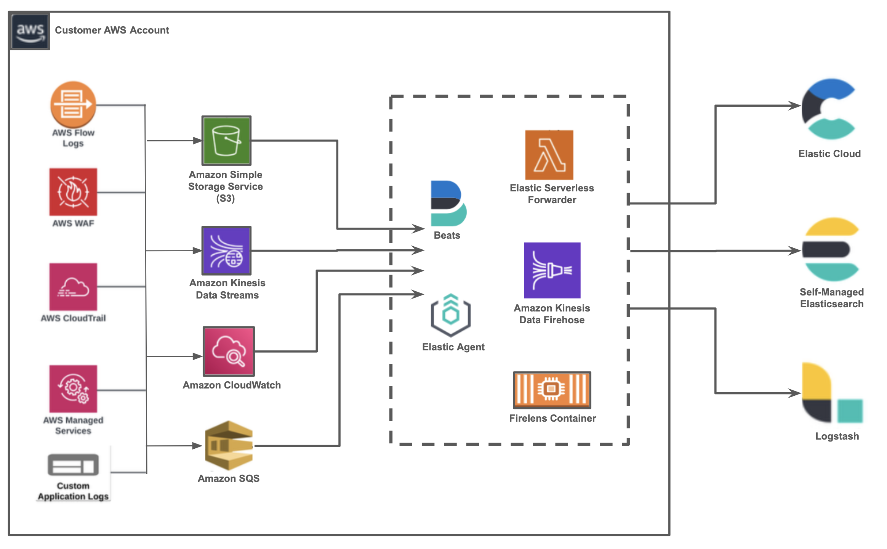

Ingestion optionsedit
You have a number of options for ingesting data with AWS. The following table helps you identify which option best fits your needs:
| Amazon Data Firehose | ESF | Elastic Agent | Beats | |
|---|---|---|---|---|
logs |
|
|
|
|
metrics |
|
|
|
|
PrivateLink support / VPC |
|
|
|
|
pros |
Managed service, auto-scale |
Auto-scale, built-in support for SQS |
Supports all integrations, manages multiple agents using Fleet |
Large configuration options |
cons |
Few configuration options |
Partial integrations support |
Not a managed service, no auto-scale |
Not a managed service, no auto-scale |
Overview of the ingest processedit
The high-level architecture is shown below.
